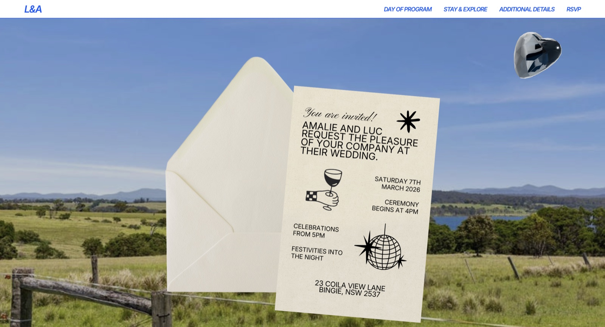
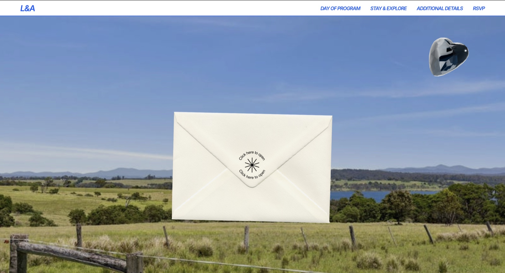
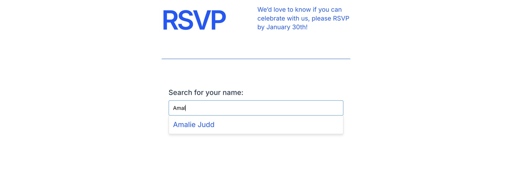

Our wedding website
Squarespace where it was fast, code injection where it wasn’t.

The invitation, and the 3D topaz heart modelled on my engagement ring.
Overview
I didn’t want to pay for a wedding website I didn’t like the look of, and I build websites for a living, so I made ours instead.
It’s on Squarespace, which I picked because the ordinary pages are genuinely fast there. Day of program, stay and explore, a page of extra details, all done in an afternoon. The parts I actually cared about weren’t possible in Squarespace, so I wrote those myself and dropped them in through code injection.

The RSVP
The RSVP was the main one. Squarespace’s form block emails you each response one at a time and has no idea who anyone is, which meant sitting there copying names into a guest list by hand. I was already planning the whole wedding in Notion, guest list included, so I built a form that talks to it in both directions instead.

You type your name into a search field, it finds you and brings back everyone in your group. A family of four RSVPs once rather than filling in the same form four times. Tick joyfully accepts and the rest of the questions appear underneath: dietaries, a song request, and where you’re staying, because we ran a shuttle to and from the property and needed to know where to pick everyone up. Decline and none of that shows, which felt like the polite way to do it.
All of it writes straight back to the same rows in Notion. So the guest list I’d started months earlier slowly filled in its own columns, and by the end it was also the dietary list, the playlist, and the shuttle run.
Behind it is a small serverless function on Netlify sitting between the form and the Notion API, mostly because the API key can’t live in the page where anyone can read it. Everything else is plain HTML, CSS and JavaScript pasted into the code injection panel and styled to match the site, down to the blue.
What It Taught Me
Two things cost me a weekend. A syntax error in a serverless function doesn’t tell you anything is wrong, the form just submits into nothing and looks fine doing it. And a backend that works perfectly will still save nothing if the front end isn’t sending the field, so I learned to check the two ends separately rather than assume.
The Rest of It
The same approach covered everything else. The site opens on an envelope you click, and the invitation slides out of it. There’s a 3D topaz heart turning in the corner, modelled on my engagement ring. I wrote both with AI and injected them the same way as the form.
RSVPs closed at the end of January, and by then the guest list had turned into everything else we needed it to be.